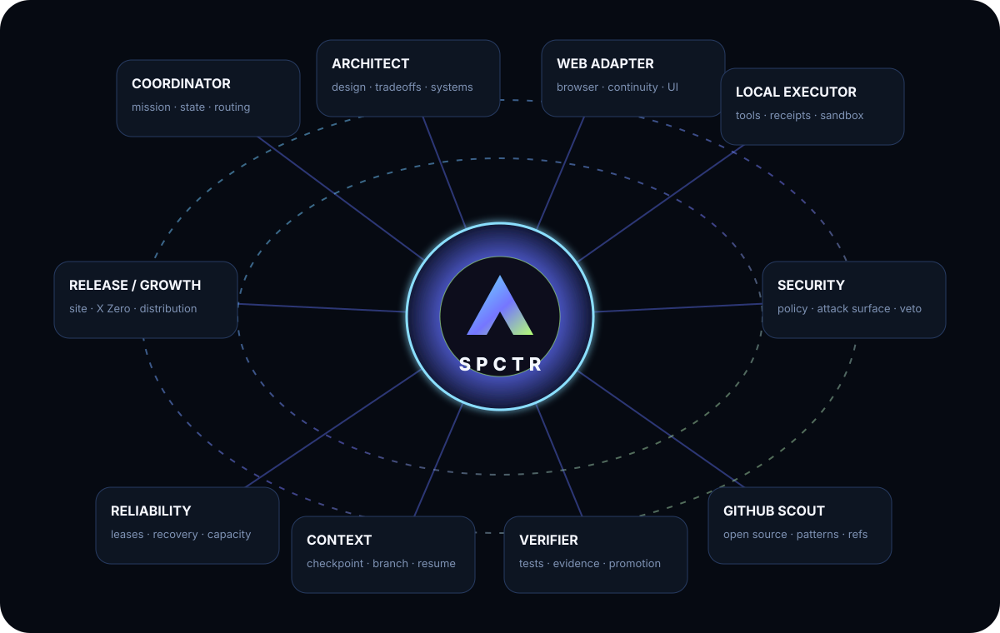
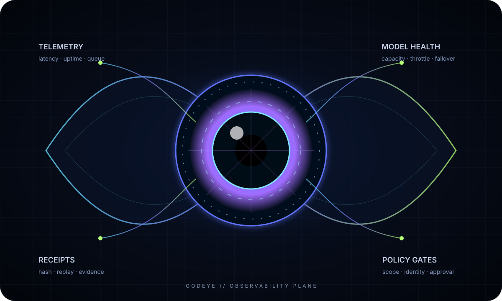

AWS
AWS GitHub
GitHub OpenAI
OpenAI HF
HF X Zero
X Zero Render
RenderSYSTEM / 01
Product engineering
MVPs, production apps, APIs, refactors, integrations and deployment.
CODE → TEST → SHIP
SPCTR coordinates specialized AI workers, software engineering, automation, research and verification into one auditable delivery system.
We do not sell a single chatbot. We assemble the right agents, tools and infrastructure around the outcome you need.
MVPs, production apps, APIs, refactors, integrations and deployment.
Durable agents for research, operations, content, triage and internal tooling.
Policy gates, receipts, replay protection, testing and controlled execution.
Interfaces, brand systems, conversion flows, dashboards and product UX.
Source-backed monitoring, synthesis, comparison and decision support.
Brazil, Europe and remote teams with multilingual product and support flows.
Each worker has a role. Specter Core keeps state, policy and evidence so models can disagree, fail or be replaced without losing the mission.

GodEye is the SPCTR observability plane: a unified view of agent health, capacity, receipts, queues, policy gates and outcomes.

Visitors see capability and proof. The operator sees leads, campaigns, agent state, audit events and sales signals in a private control surface.
Private metrics are deliberately masked in the public site.
X Zero turns public technical signals into original, source-aware content. The objective is recurring authority, not manufactured engagement.
Public feeds and technical sources become candidate signals.
Trend scoring, fact gates and multi-model critique select what deserves attention.
Original posts, diagrams, cards, demos and build logs are produced around real work.
Outcomes feed the content mix and website funnel without exposing private business data.
The system can explore broadly, but credentials, money, destructive actions and production promotion remain behind deterministic controls.
SPCTR is designed around explicit contracts between reasoning, policy and execution. Models can be powerful without becoming the final authority over credentials, spending or destructive tools.
Tell us the outcome you need. SPCTR will route it through the right engineering, research, design and verification path.